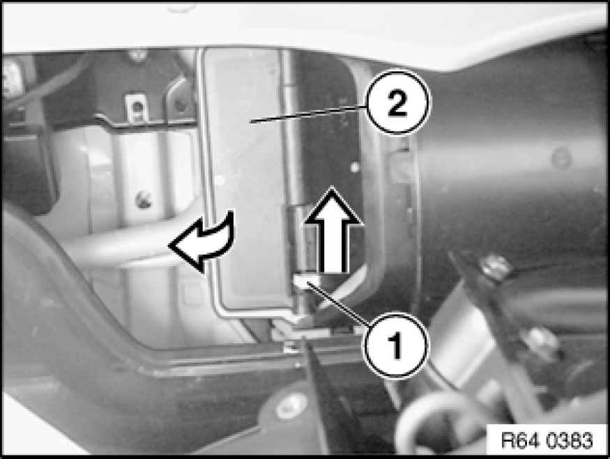

Expansion Valve: Service and Repair
64 51 522 - Removing and installing or replacing expansion valve

Warning!
Risk of injury!
Refrigerant circuit is under high pressure!
Follow safety instructions for handling R 134a refrigerant.
Avoid contact with refrigerant and refrigerant oil.
Follow safety instructions for handling refrigerant oil [1][2]Safety Instructions for Handling Refrigerant Oil.

Important!
Risk of damage!
Restart engine only when A/C system has been correctly filled.
Follow instructions Removal and Replacement for opening and replacing parts in refrigerant circuit!
If A/C system is opened for more than 24 hours:
Replacing drier insert Removing and Installing/Replacing Dryer Bottle for Air Conditioner for A/C system

Necessary preliminary tasks:
- Drawing off, evacuating and filling the A/C system Drawing off, Evacuating and Filling A/C System (R 134a) are not included in the time value given for this work operation
- Remove heater bulkhead 51 71 080 Removing and Installing/Replacing Heater Bulkhead
Unfasten nut.
Installation Note:
Tightening torque 64 53 10AZ [1][2]Expansion Valve.
Release screws.
Detach refrigerant lines in direction of arrow.
Installation:
Replace sealing rings and moisten with refrigerant oil.
Tightening torque 64 53 2AZ [1][2]Expansion Valve.

If necessary, pull lock (1) in direction of arrow and feed out flap (2).
Slacken nut (1).
Installation:
Replace sealing rings and moisten with refrigerant oil.
Tightening torque 64 53 11AZ [1][2]Expansion Valve.
Detach double pipe (2) in direction of arrow and lay to one side.
Release screws.
Installation:
Replace sealing rings and moisten with refrigerant oil.
Tightening torque 64 53 9AZ [1][2]Expansion Valve.
Pull out expansion valve in direction of arrow.
After installation:
- Evacuate and fill A/C system Drawing off, Evacuating and Filling A/C System (R 134a)